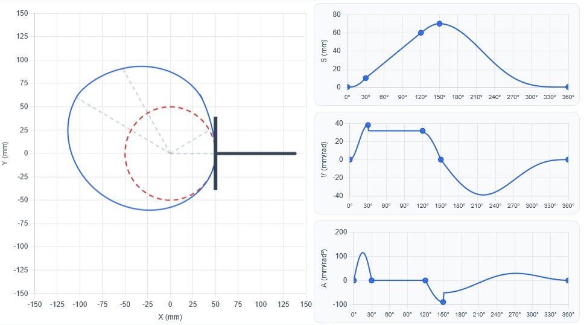
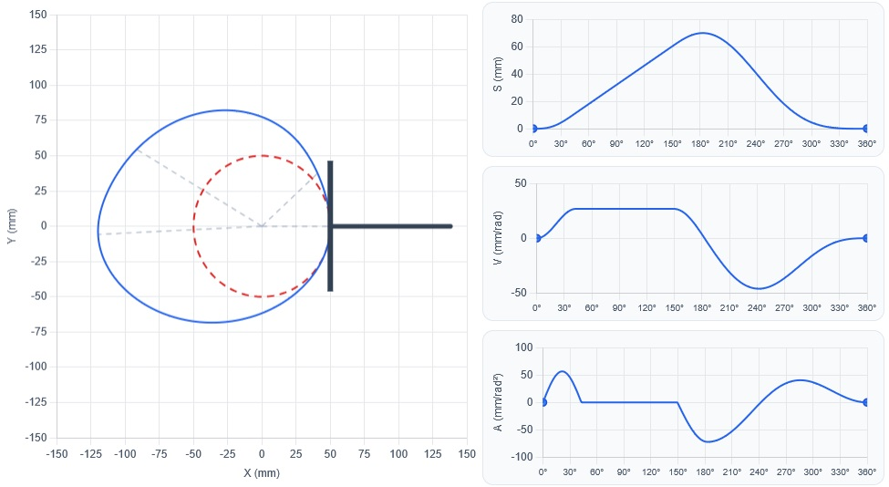

A cam may be assembled from individually valid segments and still present jumps at their junctions. CamForge corrects this problem by using continuity equations to redistribute angular intervals or displacements without replacing the selected motion laws.
The equation of an SVAJ segment
Consider segment \(i\), starting at \(\theta_i\), with angular interval \(\beta_i\) and displacement change \(\Delta L_i\). A local dimensionless coordinate is defined so that it always varies from 0 to 1:
If \(f_i(u)\) is the normalized motion law, with \(f_i(0)=0\) and \(f_i(1)=1\), displacement is:
The chain rule gives the remaining SVAJ curves:
These derivatives are velocity, acceleration and jerk with respect to cam angle. At constant angular speed \(\omega\), their time-domain counterparts are \(v=\omega S'\), \(a=\omega^2S''\) and \(j=\omega^3S'''\). Therefore, continuity in \(S'\) and \(S''\) also provides continuous physical velocity and acceleration.
Mathematical conditions at a junction
Between segments \(i\) and \(i+1\), displacement, velocity and acceleration continuity require:
The first equality follows from \(L_{i+1}=L_i+\Delta L_i\). The other two depend on the motion law, \(\Delta L\), and \(\beta\). Let the endpoint coefficients be:
These coefficients are known numbers for each motion law. If one side requires a zero derivative and the other a nonzero derivative, changing only \(\beta\) or \(\Delta L\) cannot satisfy the equation. When zeros and signs are compatible, the equations determine the correction.
Correction by changing only β
All \(\Delta L_i\) remain fixed and the unknowns are the angular intervals. Velocity continuity directly gives:
When acceleration controls the junction:
The quantity under the square root must be positive. The valid ratios allow all angles to be written in terms of one unknown:
The full revolution condition determines the scale:
Correction by changing only ΔL
The angles remain fixed and the displacement changes are the unknowns. Continuity becomes linear because every denominator is known:
Returning to the initial position adds the cycle-closure equation:
Together, these equations form a homogeneous linear system:
An equivalent form, used by CamForge, works with displacement levels \(L_i\), where \(\Delta L_i=L_{i+1}-L_i\) and \(L_n=L_0\). The continuity equations can then be collected as \(A\mathbf L=\mathbf b\). When more than one solution exists, the one closest to the original levels \(\mathbf L^{(0)}\) is selected:
The diagonal matrix \(W\) balances changes in strokes of different magnitudes. With Lagrange multipliers \(\boldsymbol{\lambda}\), the minimum conditions are written as:
The corrected strokes follow from \(\Delta L_i=L_{i+1}-L_i\). They satisfy velocity, acceleration and closure, preserve every \(\beta_i\), and remain as close as possible to the initially specified motion.
Example: four incompatible segments
| Segment | β | ΔL | Curve |
|---|---|---|---|
| 1 | 30° | 10 mm | C1 — cycloidal first half |
| 2 | 90° | 50 mm | VC — constant velocity |
| 3 | 30° | 10 mm | H2 — harmonic second half |
| 4 | 210° | −70 mm | DH — double-harmonic return |
Cumulative displacement passes through 0, 10, 60 and 70 mm before returning to zero. Position closes correctly, but velocity jumps at C1–VC and VC–H2, while acceleration jumps at H2–DH.

Applying the equations
The normalized equations of the first three segments are:
The required endpoint coefficients are:
For the double-harmonic return, \(f_{\mathrm{DH}}'(0)=0\) and \(f_{\mathrm{DH}}''(0)=\pi^2\). Since \(\Delta L_4=-70\) mm, its initial acceleration is negative, matching the sign at the end of H2.
Velocity continuity at C1–VC gives:
At VC–H2:
Velocity is zero on both sides of H2–DH, so acceleration determines the ratio:
The angular closure equation is:
| Segment | Original β | Corrected β | Preserved ΔL | Curve |
|---|---|---|---|---|
| 1 | 30° | 42.65° | 10 mm | C1 |
| 2 | 90° | 106.62° | 50 mm | VC |
| 3 | 30° | 33.49° | 10 mm | H2 |
| 4 | 210° | 177.24° | −70 mm | DH |
Before rounding, the angles are approximately 42.64728°, 106.61821°, 33.49509° and 177.23940°. Any small discrepancy in the rounded sum is due only to displaying two decimal places.

A bottleneck resolved in moments
Doing this by hand requires differentiating every motion law, evaluating endpoints, writing the equalities, closing the 360° cycle and recalculating the profile. With many segments, this compatibility work becomes a bottleneck between motion definition and geometric cam analysis.
CamForge applies these equations almost instantly and presents a continuous configuration directly. The designer still decides which motions and constraints make engineering sense, but no longer needs to repeat lengthy algebraic compatibility calculations. The path from an SVAJ specification to a smooth cam profile becomes much faster.